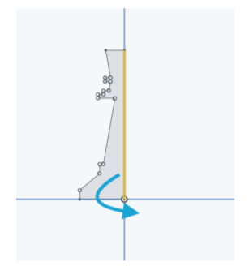
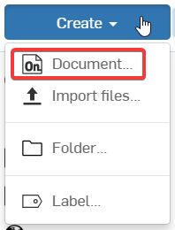
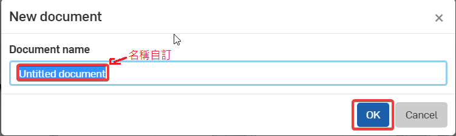
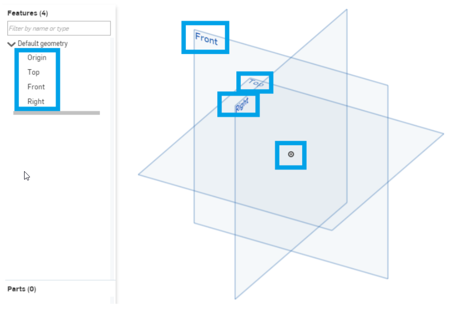

OnsharpWeek1 Lesson Plan
介紹Onshape

- 建立 Onshape 帳號
- 3D 環境導航
- 說明基本草圖的建模
- 介紹 4 個基本特徵 (擠出、旋轉、掃掠、斷面混成)
- 從 2D 過渡到 3D
- 介紹基本草圖
- 附錄A：鍵盤快捷鍵，滑鼠和觸控平面手勢，檢視工具
- 附錄B：導航說明檔，建立帳號，訂閱計劃

特徵列 : 建立幾何特徵的順序
零件列 : 這個文件檔裡面的零件，按時間順序排列
標籤 : 可以有很多的零件、組合、圖面…
圖像區 : 可以建立和修改幾何的地方
方位視角 : 選轉&看不同角度
- 如何移動零件
滑鼠右鍵 : 隨意轉動
滑鼠滾輪 : 縮放零件(以游標為中心放大縮小)
滑鼠右鍵+ctrl : 平移零件
註 : 如果因為縮放或零件太遠導致找不到時可以按f
- 草圖的建模和四個基本特徵
Extrude擠出
Revolve迴轉

Sweep掃掠
Loft混成
- 草圖:我的第一部分
新建一個文件


預設幾何

- 附錄A
螢幕快捷鍵 shift+/

- 總結
Let’s take a second to reflect what we learned in this lesson.
1. We learned about the sketch-based modeling and the 4 foundational features (extrude,revolve, sweep, and loft).
2. We made our very first sketch.
3. We learned about selecting and deleting sketch entities(實體).
4. We learned about snapping sketch entities to draw more accurate sketches.
Next week, we’ll be talking about dimensions and constraints, expanding(擴大) more on the idea of creating accurate sketches.
W4 << Previous Next >> OnsharpWeek1 Homework